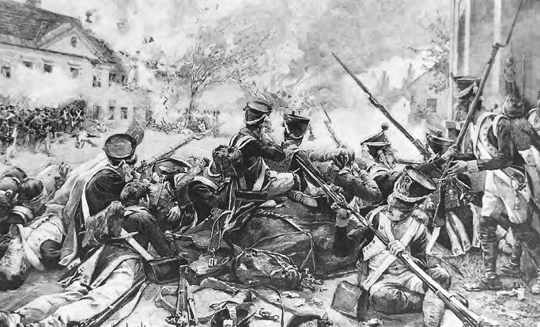
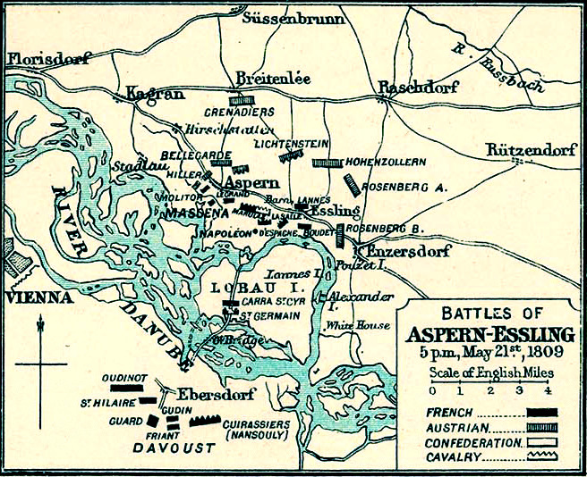
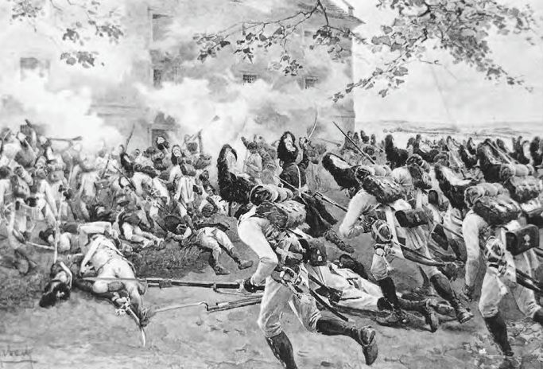

아스페른-에슬링 6편 - 격돌
게시: 2017-03-12T21:34:42+09:00
5월 21일 오전, 아스페른과 에슬링의 2개 마을에 포진한 프랑스군을 공격하는 오스트리아군은 8만4천의 보병과 1만4천이 넘는 기병, 그리고 무려 292문의 대포를 동원하고 있었습니다. 그에 비해 나폴레옹은 고작 2만2천의 보병과 3천이 채 안되는 기병, 그리고 고작 52문의 대포를 도나우 강 좌안에 가지고 있었습니다. 이렇게 압도적인 오스트리아군은 그러나 다소 어정쩡한 진형으로 프랑스군을 공격하고 있었습니다. 즉, 힐러(Hiller)와 벨가르드(Bellegarde), 그리고 호헨촐레른(Hohenzollern)이 각각 이끄는 3개 군단이 북쪽으로부터 아스페른을 향했고, 에슬링으로는 데도비히(Dedovich)가 대리 지휘하는 로젠베르크(Rosenberg)의 군단이 접근하고 있었습니다. 로젠베르크 본인은 본인의 군단 중 일부 사단을 이끌고 에슬링 동쪽에 있는 좀더 큰 마을인 그로스-엔저스도르프(Gross-Enzersdorf)를 향하고 있었는데, 이 곳에는 아예 프랑스군이 없었습니다.
오스트리아군이 이렇게 병력을 분산시켜 공격해들어간 이유는 카알 대공의 판단 착오 때문이었습니다. 프랑스군의 부교가 끊어져 프랑스군 대부분은 아직 강을 건너지 못한 상태라는 것을 몰랐던 그는 여전히 프랑스군의 본진은 아스페른에서 북진해 나올 것이라고 생각했습니다. 따라서 그 주된 공세를 3개의 강력한 군단으로 틀어막고, 그 사이 로젠베르크의 군단을 프랑스군의 옆구리인 에슬링과 그로스-엔저스도르프에 꽂아넣어 그 부교를 노리겠다는 것이 그의 작전이었습니다.
이에 맞선 프랑스군은 사실상 마세나의 제4 군단 하나에, 베시에르가 지휘하는 예비 기병대 뿐이었습니다. 란 본인은 에슬링에 있었으나, 그의 제2 군단은 아직 로바우 섬에 있었으므로 란은 원래 마세나 휘하였던 부데(Boudet) 장군의 1개 사단을 빌려서 에슬링을 지키고 있었습니다. 마세나의 군단 대부분은 아스페른 마을 남쪽에 위치했고, 몰리토르(Molitor)의 사단 1개만 마을 안에 쏙 들어가 있었습니다. 마을이 너무 작았던 것입니다. 몰리토르의 병사들은 마을 건물들과 돌담 뒤에 재주껏 숨어 적의 내습을 기다렸습니다. 에슬링에서의 상태도 비슷했고, 이 두 마을 사이는 사실상 텅 비어 있었습니다. 지킬 병력이 없었던 것이지요. 그렇다고 유일한 생명선인 부교까지 아무런 장애물도 없이 내버려 둘 수는 없었으므로, 나폴레옹은 부교 자체는 신참 근위대(Jeune Garde)가 지키도록 하고, 베시에르의 예비 기병대를 이 두 마을 사이의 평원에 배치했습니다. 여기서 작은, 그러나 누군가에게는 큰 문제가 하나 생깁니다. 란 휘하에는 부데 장군의 1개 사단 밖에 없었는데, 이건 군단장인 란에게는 너무 적은 병력을 준 셈이었습니다. 괜히 부데 사단에 지휘관이 2명 있게 되는 셈이었지요. 그래서 나폴레옹은 평원을 방어하는 베시에르의 기병대를 란 밑에 배속시켜 버렸습니다. 바로 몇 시간 전 란이 베시에르의 멱살을 쥐고 흔드는 것을 뻔히 봤으면서도 이런 조치를 취했다는 것은 사실 이해가 가지 않는 일입니다. 나폴레옹이 란과 베시에르의 성숙함을 믿었기 때문일 수도 있으나, 아마도 나폴레옹은 역시 란의 편을 들어줬던 것이 아닐까 하는 생각도 듭니다. 그리고 이건 결국 또 하나의 작은 소동으로 이어졌습니다.
오스트리아군의 공격은 정말 느렸습니다. 오전부터 시작한 공격이 아스페른 마을에 당도한 것이 거의 3시가 다 된 시점이었으니까요. 그나마 마을 안에서 강력하게 저항한 몰리토르의 사단에 의해 금방 격퇴되었습니다. 오스트리아군은 프랑스군도 자신들의 진격에 맞서 뛰어 나올 것이라고 생각했기 때문에 너무 조심스럽게 전진을 했던 것입니다. 오스트리아군의 주공을 맡은 3개 군단이 마을 북쪽에 완전히 포진을 한 것은 거의 오후 4시가 되어서였습니다. 아스페른 서쪽부터 시작된 전투에서 마세나의 군단은 용감하게 맞섰고, 오스트리아군은 압도적인 수적 우세에도 불구하고 쉽사리 마을 안쪽으로 진입할 수가 없었습니다. 여기서의 전투는 농가들 사이에서의 밀고 밀리는 혈투가 지루할 정도로 되풀이 되었습니다. 마세나는 그 사이에 증원된 생-시르(Carra Saint-Cyr) 장군의 사단의 도움을 받아 집요하게 저항했습니다. 그렇지만 워낙 적의 우세가 막강했으므로, 마을의 절반 정도를 빼앗길 수 밖에 없었습니다. 결국 밤이 되어 전투가 일단락 될 때는 마을의 북쪽 절반은 오스트리아군이, 남쪽 절반은 프랑스군이 점거한 상태가 되었습니다.

(아스페른-에슬링 전투의 첫날은 기본적으로 치열한 시가전이었습니다. 그림은 아스페른이 아니라 에슬링에서의 시가전의 모습입니다.)

(1809년 5월 21일, 드디어 격돌한 아스페른-에슬링 전투 첫날의 상황입니다.)
수적으로 절대 열세였던 중앙부의 베시에르도 상황에 비해서는 무척 분전했습니다. 오후 3시반 경 적의 기병대가 몰려오자 몇차례 돌격을 감행하며 꽤 잘 싸웠고, 덕분에 중앙부가 적의 기병대에 의해 돌파되는 일은 없었습니다. 오후 4시가 되어 에슬링을 노리는 로젠베르크의 군단이 느릿느릿 나타나자 비로소 베시에르는 아스페른-에슬링을 연결하는 도랑 뒤편으로 물러났습니다.
에슬링에서의 형편이 어떻게 보면 가장 좋지 않았습니다. (알고 보면 로젠베르크 1개 군단이 2개 대오로 나뉘어 오는 것이었습니다만) 2개 군단급의 오스트리아군을 고작 1개 보병 사단만으로 맞서 싸워야 했기 때문입니다. 최소한 1대3의 열세였지요. 그러나 여기서도 오스트리아군은 너무나도 느렸고, 너무나 미숙했습니다. 오후 느직히 에슬링 앞에 나타난 데도비히의 병력만으로도 란의 1개 사단 정도는 가뿐히 제압이 가능했지만, 데도비히는 아무 것도 하지 않았습니다. 그로스-엔저스도르프를 거쳐 올 예정이었던 로젠베르크의 부대를 기다렸던 것이지요. 로젠베르크는 아무 적군도 없던 그로스-엔저스도르프에서 꾸물거리다 저녁 6시 30분이 되어서야 나타났는데, 이렇게 두 부대가 모였음에도 본격적인 공격은 없었습니다. 에슬링 안에 포진한 프랑스군의 병력수를 잘 모르다보니 좋은 말로 조심스러웠고, 막말로 겁이 났던 것이지요. 이들의 공격은 7시가 넘어서야 시작되었는데, 그나마 따로따로 공격을 시작했습니다. 데도비히의 공격은 7시에, 로젠베르크의 공격은 8시에 시작되었던 것입니다. 이들이 공격을 시작한 이유도 한심했습니다. 에슬링에서의 전황을 파악한 카알 대공이 '뭘 기다리는 것인가 ? 당장 공격 !'이라는 명령을 전해왔기 때문에 어쩔 수 없이 시작했던 것입니다.
이런 어설픈 공격이라고 해도, 당하는 입장에서는 호된 것이었습니다. 프랑스군은 두꺼운 석벽을 가진 곡물 창고를 중심으로 이곳저곳의 돌담 뒤에 숨어 에슬링 전체를 요새화하고 기다리고 있었는데, 적의 압도적인 포격에 무척이나 고생을 해야 했습니다. 그럼에도 불구하고 란은 로젠베르크와 데도비히를 잘 막아내고 있었는데, 중앙부에서 문제가 발생했습니다.

(에슬링의 거대한 곡물 창고로 돌격하는 오스트리아군 척탄병들의 모습입니다.)
카알 대공은 오후 늦게서야 비로소 프랑스군이 기어나올 생각이 전혀 없고, 정말 아스페른과 에슬링을 사수하며 버틸 생각이라는 것을 깨달았습니다. 카알 대공도 나름 명장이었으므로, 그렇게 프랑스군이 수비에 치중한다면 좁은 아스페른 정면에 3개 군단이나 집중시켜봐야 효율적인 부대 운용이 안 될 뿐이라는 것을 알고 있었습니다. 그는 보병을 상대적으로 텅빈 아스페른-에슬링 사이의 중앙부로 진격시켰습니다. 그 곳은 에슬링에서 고군분투 중인 란의 관할 지역이었는데, 그에게는 따로 병력이 없었습니다. 아니, 있긴 있었는데, 그게 베시에르의 기병대였습니다. 란은 오후 한때 잠깐 싸우는 척 하더니 도랑 뒤에 숨어 있는 베시에르에 대한 증오심이 새삼 솟아 올랐나 봅니다. 그는 부관을 베시에르에게 보내면서 "지금 당장 돌격할 것, 그리고 제대로 할 것"이라고 단어 하나하나 그대로 전달하라고 지시했습니다.
비록 욕설은 섞여 있지는 않았습니다만, 이 명령을 단어 하나하나 그대로 전달하는 것은 상상할 수 없는 일이었습니다. 당시 장교 집단이란 신사들의 모임이었기 때문에, 상급자가 하급자에게 급한 상황에서 명령을 내릴 때도 예의를 갖추어 권고형으로 하는 것이 상식이었습니다. 영국 해군의 이야기이긴 합니다만, 제독이 일개 중위 하나를 당장 오라고 소환할 때도 연락 장교는 이런 메시지를 전달했습니다.
"The admiral's compliments, sir, and he'd like Mr Hornblower's presence on board the flagship as soon as is convenient."
(제독님께서 안부와 함께 여쭙습니다만, 혼블로워 중위께서 시간이 나시는 대로 기함에 와주셨으면 하십니다.)
그런데 일개 대위 나부랭이가, 아무리 더 높은 란 원수의 명령을 받았다고 해도, 베시에르 원수에게 '지금 당장, 그것도 제대로 돌격하라십니다'라는 메시지를 전달하다가는 무슨 봉변을 당할지 몰랐습니다. 이런 위태로운 전갈을 가지고 간 것은 루이 드 비리(Louis de Viry) 대위였는데, 당연히 무척 순화된 버전의 명령을 전달했습니다. 돌아온 드 비리 대위에게 란은 그가 전달한 명령을 단어 하나하나 그대로 읊게 했고, 그 내용이 무척 순화되어 전달된 것을 안 란은 분통이 터졌습니다. 그는 다시 샤를 라베도예르(Charles LaBedoyere) 대위를 보냈으나, 이 대위도 베시에르 앞에서는 겁을 먹고 드 비리 대위와 비슷한 메시지만 전달할 수 있었습니다. 이젠 부하들에게 화가 난 란은, 때마침 도착한 마르보(Marbot) 대위에게 '오쥬로 원수께서 자넨 믿어도 된다고 했네, 그러니 그 말씀이 맞다는 것을 증명해보게'라는 말과 함께 다시 또박또박 명령을 불러주며 반드시 그 말 그대로 전달할 것을 명령했습니다.
마르보는 정말로 '지금 당장, 제대로 돌격하라십니다'라고 베시에르에게 전달했고, 베시에르에게서 '이런 버르장머리 없는 대위 나부랭이를 봤나'라며 호되게 꾸지람을 들어야 했습니다. 그러나 란에 대한 베시에르의 분노는 나름 좋은 효과를 냈습니다. 끓어오르는 분노를 돌격으로 승화시킨 그는 즉각 도랑을 넘어 중앙부로 몰려오는 적을 향해 돌격하여, 적의 포병대를 제압하고 밀집 대오를 구성한 보병대를 한바퀴 돈 뒤 복귀했습니다. 비록 적 보병대를 깨뜨리지는 못했지만, 어차피 기병만으로 적 밀집 보병을 격파하는 것은 불가능한 것이었고, 그의 용감무쌍한 돌격만으로도 오스트리아군의 중앙부 공격은 돈좌된 셈이었으므로 상당한 공을 세운 셈이었습니다.
결국 아스페른-에슬링 일대의 전투는 밤 11시까지 진행되다, 양군 모두 병사들이 지치는 바람에 정식 휴전없이 소강상태로 빠져 들게 됩니다. 에슬링에서는 란의 분전, 그리고 베시에르의 분노의 돌격 덕분에 오스트리아군이 발을 못 붙였으나, 오스트리아군과 프랑스군이 시가지 내에서 혈투를 벌이던 아스페른에서는 그 상태 그대로, 골목 하나를 사이에 두고 밤을 지새게 되었습니다.
병사들은 지쳐 쓰러졌지만 지휘관들은 또 다시 모여야 했습니다. 마세나의 사령부로 모인 베시에르와 란은 서로 얼굴을 보자마자 또 으르렁거렸습니다. 이 둘은 서로 모욕을 퍼붓다 결국 검을 뽑아들었는데, 이 두 사람 모두에게 있어 더 상관이었던 마세나가 단호하게 명령을 내리는 바람에 결투로까지 이어지지는 않았습니다.
한편, 로바우 섬에서 부교의 수리에 대한 보고와 함께 이 날의 전황 보고를 받고 있던 나폴레옹은 그 다음날의 승리를 확신했습니다. 1대3 이상의 우세를 가지고도 프랑스군을 축출하지 못한 오스트리아군은 서툴고 느린 예전 그 모습 그대로임이 틀림없었고, 자신의 공세를 막고 있던 후방의 부교가 마침내 수리가 끝났다는 보고가 들어온 것입니다. 그는 다부의 군단에게 카이저엔저스도르프에 집결하여 도강 준비를 하라고 명령서를 날리고, 란의 제2 군단을 밤새 도나우 강 좌안으로 계속 이동시켰습니다. 그는 란의 제2 군단을 앞세워 상대적으로 취약한 적의 중앙부를 돌파한 뒤 아스페른 쪽으로 선회하여 적의 주력을 섬멸할 계획이었습니다. 나폴레옹이 그렇게 달콤한 꿈에 젖어 제2 군단 병사들을 밤새도록 도강시키던 5월 22일 새벽, 병사들이 밟고 건너던 그 부교 및의 도나우 강의 물결은 점점 더 거세지고 있었습니다.
Source : The Emperor's Friend: Marshal Jean Lannes By Margaret S. Chrisawn
Three Napoleonic Battles By Harold T. Parker
The Life of Napoleon Bonaparte, by William Milligan Sloane
https://en.wikipedia.org/wiki/Battle_of_Aspern-Essling
http://www.historyofwar.org/articles/battles_aspern_essling.html
Lieutenant Hornblower by C. S. Forester